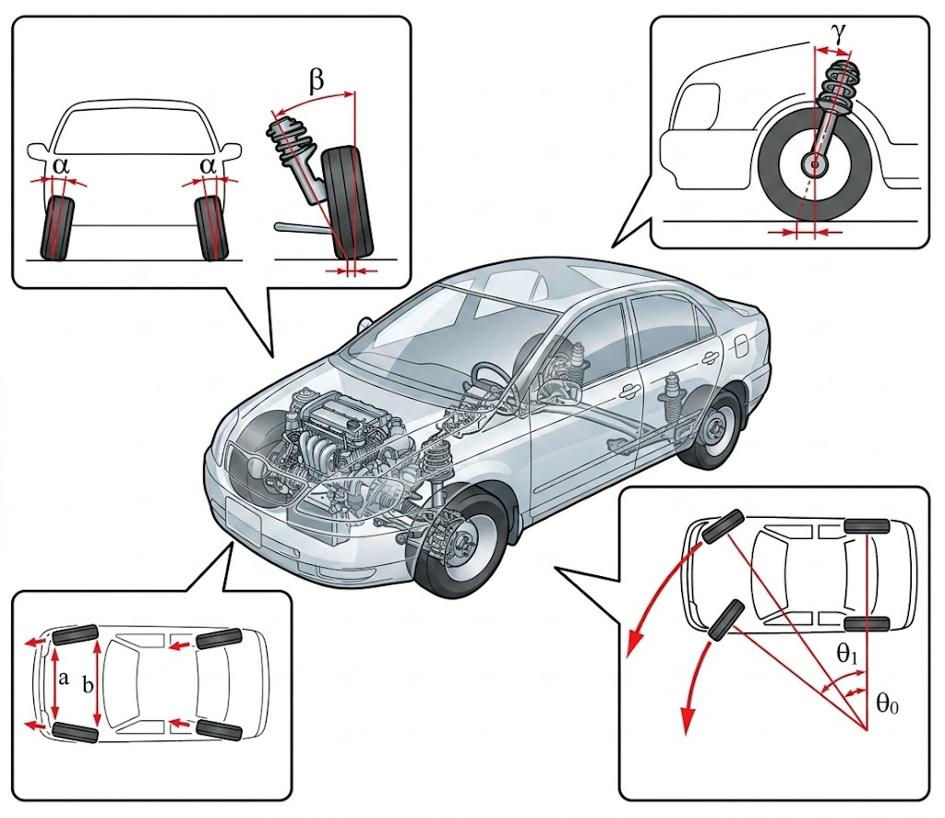
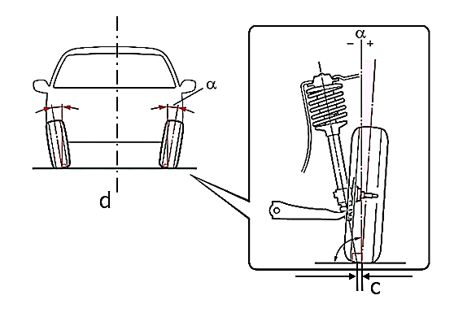
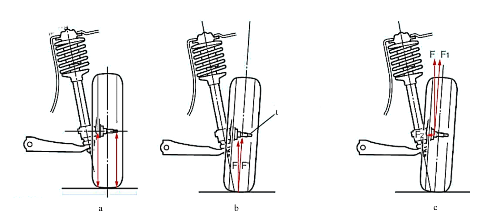
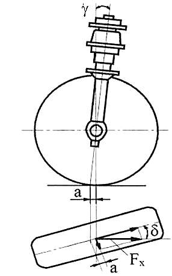
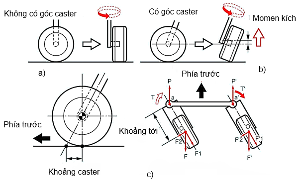
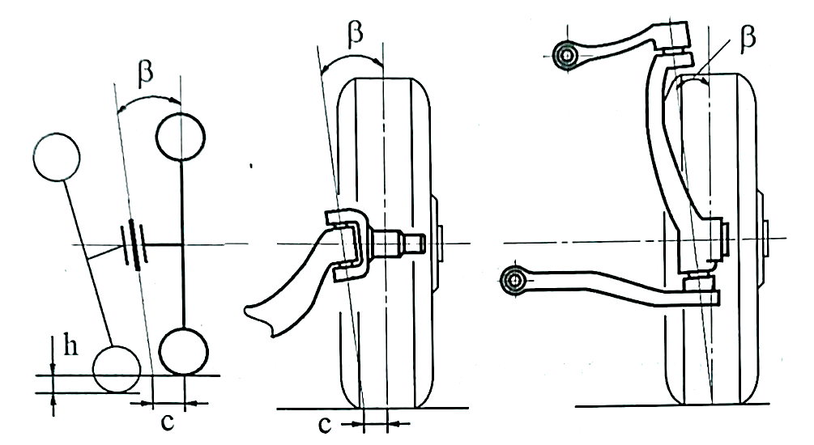
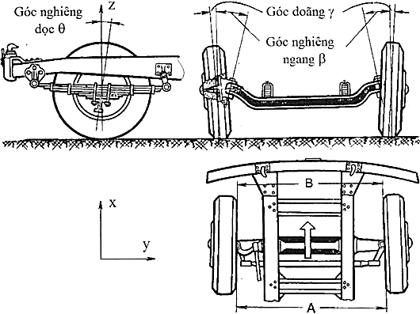
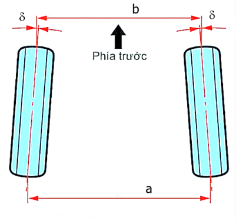

Ngoài chức năng đỡ toàn bộ tải trọng ô tô và tạo nên chuyển động thân xe, bánh xe dẫn hướng còn đảm nhận nhiệm vụ dẫn hướng, do vậy các bánh xe được bố trí các góc này trong hệ thống lái sẽ đảm bảo:
-Đảm bảo điều kiện truyền lực tốt nhất giữa bánh xe với mặt đường;
-Đảm bảo ổn định chuyển động cho ô tô khi đi thẳng cũng như khi quay vòng.

Hình 9.23. Các góc đặt bánh xe dẫn hướng
α: Góc nghiêng ngang bánh xe – góc camber;
β: Góc nghiêng ngang trụ lái đứng – góc kingpin;
γ: Góc nghiêng dọc trụ lái đứng – góc caster;
a: Khoảng cách phía trước của 2 bánh xe;
b: Khoảng cách phía sau của 2 bánh xe.
a. Góc nghiêng ngang của bánh xe dẫn hướng (Góc camber – Góc α)
Góc nghiêng ngang của bánh xe dẫn hướng là góc đặt nghiêng bánh xe đo trên mặt phẳng ngang giữa mặt phẳng lăn bánh xe so với mặt phẳng đối xứng dọc của xe. Nhìn từ phía trước lại. Góc nghiêng này được thể hiện trên hình 9.24.
Camber dương: bánh xe nghiêng ra ngoài.
Camber âm: bánh xe nghiêng vào trong.
Trên đa số ô tô ngày nay bố trí kết cấu góc nghiêng ngang (góc camber) nghiêng ra ngoài (góc camber dương), trên các ô tô đua tốc độ cao có thể gặp góc nghiêng vào trong (góc camber âm).
Bố trí bánh xe dẫn hướng với góc nghiêng dương có tác dụng:
-Khi bánh xe chịu tải, khắc phục các khe hở trong kết cấu, góc nghiêng ngang giảm nhỏ, đảm bảo đa số thời gian bánh xe lăn phẳng giúp bánh xe có khả năng tiếp nhận phản lực tốt hơn và tạo sự mài mòn đều bề mặt lăn của lốp;
- Phản lực từ mặt đường tác dụng lên bánh xe có xu hướng đẩy bánh xe vào trong, khắc phục độ rơ ổ bi moay-ơ bánh xe;
- Giảm cánh tay đòn "c", tức là giảm nhỏ mô-men cản quay vòng, đồng thời giảm lực trên vành tay lái.
- Bố trí bánh xe dẫn hướng với góc nghiêng vào trong (góc camber âm) làm giảm khả năng trượt ngang của bánh xe ngoài dưới tác dụng của lực ly tâm khi chuyển động với vận tốc cao.

Hình 9.24. Góc camber
d: Mặt phẳng dọc trục; c: Khoảng camber
Lý do chính để chấp nhận camber bằng không là nó giúp cho lốp xe mòn đều. Nếu bánh xe có Camber dương hoặc âm thì góc nghiêng của bánh xe so với mặt đường sẽ làm cho bán kính quay vòng của phần phía trong và phía ngoài khác nhau, và lốp xe sẽ mòn không đều. Camber bằng không giúp ngăn ngừa hiện tượng này.

Hình 9.25. Camber bằng không và Camber dương
Hình 9.25a. Camber bằng không; Hình 9.25b. Camber dương – giảm tải trọng thẳng đứng; Hình 9.25c. Camber dương – Lực F2 đẩy bánh xe vào trong.
Camber dương có các tác dụng sau đây: Giảm tải trọng thẳng đứng trong trường hợp góc camber bằng không, tải trọng tác dụng lên trục bánh xe theo hướng F'. Khi có Camber dương, tải trọng F' này chuyển thành lực F tác dụng theo hướng cam lái. Nhờ thế, mô-men tác dụng lên trục bánh xe và cam lái giảm xuống. Ngăn ngừa tuột bánh xe ra khỏi trục tải trọng F tác dụng lên bánh xe có thể phân chia thành hai thành phần F1 và F2. F2 là lực theo chiều trục và có xu hướng đẩy bánh xe vào phía trong, giữ cho bánh xe không bị trượt ra khỏi trục.
Ngăn camber âm phát sinh: Camber dương giúp cân bằng lại xu hướng nghiêng bánh vào trong khi xe quay vòng do biến dạng đàn hồi ở hệ thống treo.
b. Góc nghiêng dọc trụ lái đứng (Góc caster – γ)
Góc nghiêng dọc của trụ lái đứng là góc đặt nghiêng trụ đứng đo trên mặt phẳng dọc giữa đường tâm trụ đứng với mặt phẳng cắt ngang của xe. Góc nghiêng dọc trụ đứng thường đặt nghiêng phía trên về sau và được gọi là góc caster dương, ngược lại là caster âm (hình 9.26). Caster dương là góc phổ biến.
Nếu kéo dài đường trục của trụ đứng thì nó sẽ gặp mặt đường tại một điểm nằm ờ phía trước của điếm tiếp xúc của bánh xe với mặt đường một khoảng a.

Hình 9.26 Góc Caster
Khi trụ đứng quay để xe chạy vào đường vòng, nếu các bánh xe có góc caster thì lốp sẽ bị nghiêng đi so với mặt đường và tạo ra mô-men kích, có xu hướng nâng thân xe lên (hình 9.27)
Mô-men kích này đóng vai trò như một lực hồi vị bánh xe, có xu hướng đưa thân xe trở về vị trí nằm ngang và duy trì độ ổn định trên đường thẳng của xe.
Hồi vị bánh xe nhờ có khoảng Caster:
- Nếu bánh xe có góc caster thì giao điểm giữa đường tâm trụ đứng với mặt đường sẽ nằm phía trước tâm điểm tiếp xúc giữa lốp xe với mặt đường.
- Vì lốp xe được kéo về phía trước nên lực kéo này sẽ lấn át các lực có xu hướng làm cho bánh xe mất ổn định, giữ cho bánh xe chạy ổn định theo đường thẳng.
- Khi bánh xe được chuyển hướng sang một bên (do lái hoặc do trở ngại khi chạy trên đường thẳng) thì sẽ phát sinh các lực bên F2 và F'2.

Hình 9.27 Độ ổn định chạy trên đường thẳng nhờ có góc caster
Hình 9.27a. Khi không có góc caster; Hình 9.27b. Khi có góc caster; Hình 9.27c. Bánh xe hồi vị nhờ có khoảng caster.
P, P’: lực kéo chủ động
a, a’ : Trục xoay đứng
O, O’: Tâm điểm giữa tiếp xúc lốp với mặt đường
F, F’: Phản lực
F1, F2: Lực thành phần F
F’1, F’2: Lực thành phần F’
T, T’: Lực hồi vị.
- Những lực bên này có tác dụng làm quay trụ đứng (nhờ có khoảng caster) và có xu hướng hồi vị bánh xe về vị trí ban đầu của nó (lực hồi vị).
Vào lúc này, với cùng một lực bên như nhau, nếu khoảng caster lớn, lực hồi vị bánh xe cũng lớn. Vì vậy, khoảng caster càng lớn thì độ ổn định trên đường thẳng và lực hồi vị càng lớn.
c. Góc nghiêng ngang trụ lái đứng (góc King pin -góc β)
Góc nghiêng ngang trụ lái đứng là góc nghiêng được đo theo phương ngang của xe (nhìn từ phía đầu ô tô) của trục lái đứng với mặt phẳng thẳng đứng song song với mặt phẳng đối xứng dọc của xe (hình 9.28).
Trục quay này được tạo thành bởi đường nối từ bản lề trụ đứng (kingpin hoặc rotuyn trụ đứng) phía trên và phía dưới. Hoặc Trục quay đứng là đường tưởng tượng đi qua tâm chốt quay, hoặc trục của moay-ơ trong hệ thống treo độc lập kiểu McPherson. Trên thực tế, với xe hiện đại, Góc kingpin thường được tích hợp sẵn vào thiết kế trụ đứng và không điều chỉnh được.

Hình 9.28 Góc nghiêng ngang trục lái đứng
Kéo dài đường tâm trụ đứng đến mặt đường ta thấy điểm cắt của đường kéo dài của trụ đứng với mặt đường cách tâm bánh xe một khoảng c. Khi quay vòng, bánh xe dẫn hướng quay xung quanh trụ đứng. Tại mặt đường, các phản lực dọc của bánh xe với cánh tay đòn c gây nên mô-men quay với trụ đứng. Mô-men này được gọi là "mô-men ổn định bánh xe dẫn hướng". Mô-men này xuất hiện khi bánh xe rời khỏi vị trí trung gian (vị trí đi thẳng)
d. Độ chụm (hoặc độ doãng) của bánh xe dẫn hướng
Độ chụm là độ lệch của phần trước và phần sau bánh xe khi nhìn từ trên xuống. Góc lệch của bánh xe được gọi là góc chụm.
Trên các cầu dẫn hướng thường bố trí độ chụm dương. Trong trường hợp đó, dưới tác dụng của lực cản mặt đường (hướng ngược với chiều chuyển động), bánh xe có xu hướng ép các bánh xe dẫn hướng xung quanh trụ đứng với cánh tay đòn c (hình 9.28). Lực này tạo nên mô-men quay bánh xe. Mô-men này làm quay bánh xe về vị trí có độ chụm bằng 0 (tức là tạo khả năng lăn phẳng bánh xe).


Hình 9.29. Độ chụm bánh xe dẫn hướng
Độ chụm vào (Toe-in): hai bánh xe hướng vào nhau ở đầu trước.
Độ doãng (Toe-out): hai bánh xe mở rộng đầu trước so với đuôi.
Giúp đảm bảo ổn định chuyển động thẳng của xe. Hạn chế hiện tượng mòn không đều của lốp. Bù trừ độ rơ ổ trục, gối đỡ và ảnh hưởng của hệ thống treo trong vận hành thực tế.